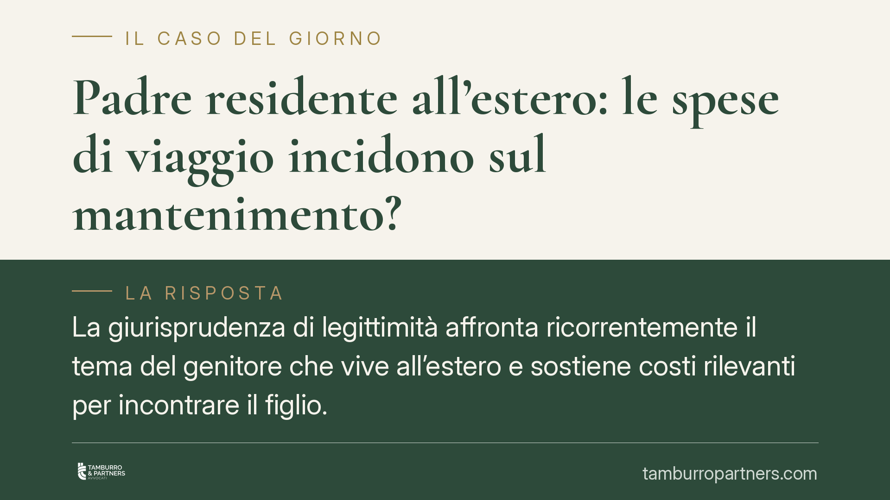

Padre residente all'estero: le spese di viaggio incidono sul mantenimento?
La giurisprudenza di legittimità affronta ricorrentemente il tema del genitore che vive all'estero e sostiene costi rilevanti per incontrare il figlio. La domanda pratica è netta: quelle spese di viaggio pesano sul calcolo dell'assegno di mantenimento? La risposta richiede di distinguere tra bisogni diretti del minore e capacità contributiva del genitore obbligato, secondo il criterio di proporzionalità.

Il problema: spese di viaggio e mantenimento del figlio
Un genitore trasferitosi all'estero deve affrontare costi non banali per esercitare il diritto di visita: voli, spostamenti, pernottamenti. La questione è se questi esborsi debbano incidere sulla determinazione dell'assegno di mantenimento a carico dello stesso genitore, riducendolo, oppure se restino un onere estraneo al calcolo.
La risposta non è scontata e ruota attorno a una distinzione tecnica precisa. Le spese di viaggio non sono un bisogno diretto del figlio: il minore non ha bisogno che il padre voli per incontrarlo, ha bisogno di essere mantenuto (vitto, alloggio, istruzione, salute, tempo libero). Quei costi di trasferta attengono invece alla sfera del genitore e possono rilevare, semmai, come fattore che incide sulla sua capacità contributiva, cioè sulle risorse effettivamente disponibili per contribuire al mantenimento.
Spese di viaggio e mantenimento: l'inquadramento normativo
Il parametro di riferimento è l'art. 337-ter c.c., che impone di provvedere al mantenimento del figlio in misura proporzionale al reddito di ciascun genitore, tenendo conto delle attuali esigenze del minore, del tenore di vita goduto in costanza di convivenza, dei tempi di permanenza presso ciascun genitore e della valenza economica dei compiti domestici e di cura assunti.
È il principio di proporzionalità a governare la materia. In questa logica, le spese di viaggio per l'esercizio del diritto di visita rilevano come componente della situazione economica complessiva del genitore obbligato: incidono sulla misura in cui egli può contribuire, non come voce autonoma dei bisogni del figlio. Diverso è il caso delle esigenze sanitarie straordinarie del minore, che vanno considerate come bisogno diretto e concorrono a determinare il fabbisogno da coprire.
Resta ferma la distinzione tra spese ordinarie – ricomprese nell'assegno mensile e destinate ai bisogni correnti – e spese straordinarie, imprevedibili o di importo rilevante (interventi sanitari non di routine, attività formative particolari), da ripartire di norma pro quota e da documentare a parte.
Analisi: capacità contributiva, tempi di permanenza e revisione
L'aspetto interpretativo più delicato riguarda l'interazione tra spese di viaggio e tempi di permanenza. Se i costi elevati riducono di fatto la frequenza degli incontri, si comprime il tempo che il figlio trascorre con il genitore residente all'estero; e i tempi di permanenza, ex art. 337-ter c.c., sono uno dei criteri di determinazione del contributo. Una minore permanenza presso il genitore obbligato tende ad aumentare l'onere economico gravante sull'altro genitore collocatario, con effetti sull'assegno.
La questione può inoltre rilevare in sede di revisione ex art. 337-quinquies c.c.: il mutamento della residenza all'estero, con il correlato aggravio dei costi di visita, può integrare quel cambiamento sopravvenuto delle condizioni economiche che legittima la domanda di modifica dell'assegno. Non è però un automatismo: occorre dimostrare che la spesa è effettiva, ricorrente e incidente in modo apprezzabile sulle risorse disponibili, non un mero disagio organizzativo.
*Nota di verifica: alcune massime circolate su questo tema (tra cui l'estremo indicato in fonti divulgative) non risultano allo stato riscontrabili nelle banche dati ufficiali. Per correttezza abbiamo scelto un'esposizione per principi, ancorata alle norme codicistiche vigenti, senza attribuire a specifiche pronunce contenuti non verificabili.*
Cosa fare in concreto
- Documentate le spese di viaggio: conservate biglietti, prenotazioni e ricevute per dimostrarne effettività, ricorrenza e importo.
- Distinguete ordinario e straordinario: tenete separata la contabilità delle spese correnti del figlio da quelle straordinarie, che seguono regole di ripartizione diverse.
- Valutate la revisione ex art. 337-quinquies c.c. se il trasferimento all'estero ha modificato in modo stabile la situazione economica.
- Collegate spese e tempi di permanenza: quantificate l'impatto reale dei costi sulla frequenza degli incontri, perché incide sul calcolo proporzionale.
- Verificate il reddito complessivo: il giudice ragiona sulla capacità contributiva effettiva, non sul reddito dichiarato in astratto.
Contributo informativo a cura di Tamburro & Partners Avvocati - Avv. Giuseppe Tamburro. Non costituisce parere legale.
Ogni famiglia ha il suo equilibrio.
Separazione, divorzio, affidamento, assegno: se vuoi un confronto riservato su una specifica situazione, scrivi allo studio. Ti rispondiamo entro un giorno lavorativo.